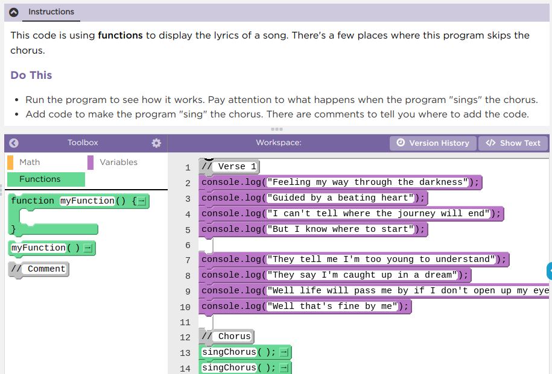
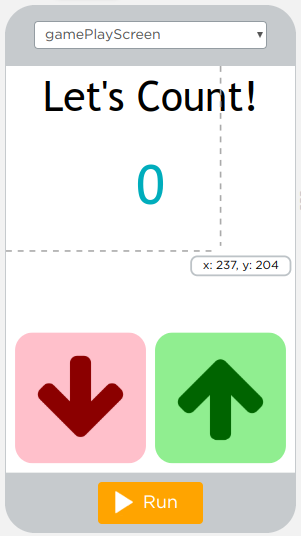
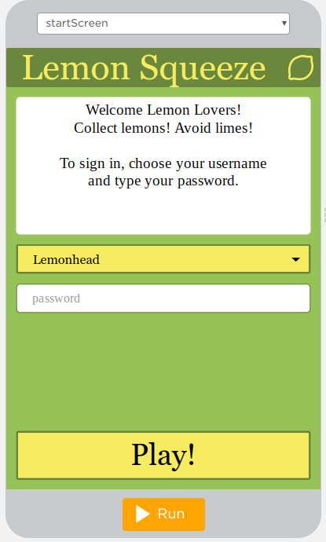

Today you will see how functions let you give a group of instructions a name, write them once, and use them again and again.
You and your partner should have the Song Lyrics activity guide. It shows the same song written in two styles. Here is part of each one.
1In Style 1, what line of the song do you sing after line 09? What about in Style 2?
2Style 2 uses fewer lines to write. Are there fewer lyrics to sing?
3What are the benefits of writing a song in Style 2?
What are the benefits of writing a song in Style 2?

1Open Lesson 9, Level 1 on Code.org.
2Run the program and notice what happens each time it “sings” the chorus.
3Complete Levels 1 and 2.
A short Code.org video about how to define a function once and call it wherever you need it.
A Code.org video that shows how functions are defined and called in App Lab.

Complete Levels 3 to 5. As you read the code, answer these questions with your partner.
1On what line or lines is the updateScreen function being declared?
2On what lines is the updateScreen function being called?
3How does the updateScreen function make the program easier to write and understand?

Level 6 returns to the Lemon Squeeze app from Lesson 4.6, now with a new updateScreen function added.
Complete Level 6, then answer this question with your partner.
How does the newly added updateScreen function help keep your code better organized or reduce the amount of repeated code?
In this pattern, variables hold the information, and one function puts it on the screen.
updateScreen is declared once. It sets every output from the variables.
It is called when the app starts and after every change to a variable.
1var count = 0;
2updateScreen();
3
4onEvent("upButton", "click", function() {
5 count = count + 1;
6 updateScreen();
7});
8
9onEvent("downButton", "click", function() {
10 count = count - 1;
11 updateScreen();
12});
13
14function updateScreen() {
15 setText("countLabel", count);
16 if (count > 20) {
17 setProperty("countLabel", "text-color", "green");
18 }
19}How many times is updateScreen called in the updateScreen pattern code?
A named group of programming instructions. A function is also called a procedure.
function updateButton() {
setProperty("bigButton", "width", 100);
setProperty("bigButton", "height", 200);
setProperty("bigButton", "text", "Click me!");
}A command that runs the code inside a function.
updateButton();What is the difference between declaring a function and calling a function? Why is it useful to declare it once and call it many times?